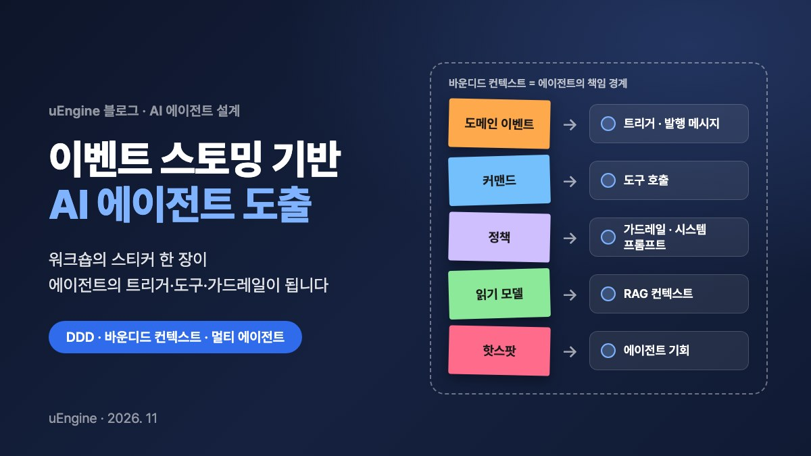

이벤트 스토밍 기반 AI 에이전트 도출

「이벤트 스토밍 및 도메인 주도 설계를 활용한 AI 에이전트 식별 및 프로세스 혁신 보고서」를 공개합니다. 이벤트 스토밍 워크숍에서 붙이는 스티커가 AI 에이전트의 트리거·도구 호출·가드레일·지식 베이스·책임 경계로 어떻게 이어지는지, 어떤 병목에 에이전트를 먼저 넣어야 하는지, 그리고 전사 도입 로드맵과 현실적인 한계를 차례로 다룹니다.
1. 개요 및 연구 동향: DDD·이벤트 스토밍 기반 AI 에이전트 모델링의 부상
생성형 인공지능(Generative AI)과 대규모 언어 모델(LLM)의 기술적 성숙은 단순한 질의응답 보조 도구를 넘어 복잡한 비즈니스 워크플로우를 자율적으로 계획하고 도구를 호출하여 실행하는 에이전틱 워크플로우(Agentic Workflow) 및 멀티 에이전트 시스템(Multi-Agent Systems, MAS)으로의 진화를 가속하고 있다1. 그러나 엔터프라이즈 환경에서 지능형 에이전트를 실무 프로세스에 배치하려는 시도는 빈번한 구조적 장애에 직면하고 있다4. 모델 자체의 일반 추론 능력이 부족해서라기보다는, 기업 고유의 비즈니스 도메인 지식 부재와 명확하지 않은 업무 경계 설정으로 인해 시스템 수준의 결함이 발생하기 때문이다4. 도메인 맥락이 결여된 LLM은 겉보기에만 타당하고 실제 비즈니스 규칙과 불변식(Invariants)을 위반하는 동작을 수행하며, 다중 에이전트 환경에서는 책임 소재의 불분명함, 컨텍스트 간 데이터 누수, 예기치 않은 결합도로 인해 소프트웨어 공학의 전형적인 ‘진흙탕 덩어리(Big Ball of Mud)’ 안티패턴이 에이전트 계층에서 재현되는 문제가 확인된다2.
이러한 병목을 해소하기 위해 학계와 산업계 아키텍트들은 도메인 주도 설계(Domain-Driven Design, DDD)와 그 실천적 분석 기법인 이벤트 스토밍(EventStorming)을 AI 에이전트 식별 및 시스템 엔지니어링의 핵심 도구로 편입하고 있다1. DDD의 바운디드 컨텍스트(Bounded Context)와 이벤트 스토밍의 이벤트 구동 분석 메커니즘은 자율 에이전트의 인지적 책임 경계(Cognitive Boundary)를 확정하고 에이전트 간의 비동기적 협력 규약을 정립하는 데 최적의 공학적 토대를 제공한다1.
최근 연구 동향을 살펴보면 학술 영역에서는 이벤트 스토밍 워크숍 산출물을 바탕으로 확장 가능한 멀티 에이전트 아키텍처를 체계화하는 프레임워크 연구가 지속해서 발표되고 있다1. 엔터프라이즈 아키텍처 실무 영역에서는 아마존웹서비스(AWS)가 항공 운항 및 고객 여정 전반의 대규모 프로세스를 바운디드 컨텍스트 단위로 분할하여 전담 AI 에이전트를 도출하고, 결항과 같은 돌발 상황(Disruption) 발생 시 에이전트 간 협력 토폴로지를 구축하는 방법론을 실증하였다7. 또한 오리움(Orium)과 컴포저블(Composable) 등 글로벌 디지털 전환 컨설팅 진영에서는 이벤트 스토밍 기법을 비즈니스 프로세스 혁신(BPR)에 접목하여 기업 내 수동 작업 병목을 진단하고 지능형 에이전트 도입 우선순위 및 실행 로드맵을 도출하는 실무 프레임워크를 정립하여 현장에 적용하고 있다5.
2. 이벤트 스토밍 아티팩트와 AI 에이전트 아키텍처 간 매핑 메커니즘
이벤트 스토밍은 비즈니스 도메인에서 발생하는 사건의 흐름을 시간 축(좌측에서 우측)을 따라 시각적으로 모델링하는 협업 기법이다6. 이 워크숍에서 생성되는 표준 시각 아티팩트들은 멀티 에이전트 시스템을 구성하는 트리거, 툴 호출 인터페이스, 시스템 프롬프트 가드레일, 영속 상태 저장소 등과 엄밀하게 일대일로 대응된다4.
도메인 이벤트(Domain Event)는 시스템 내에서 발생한 비즈니스적으로 유의미한 과거의 사실을 의미하며, 오렌지색 스티커로 표기된다6. 에이전틱 아키텍처에서 도메인 이벤트는 에이전트의 동작을 개시시키는 비동기 트리거(Input Event) 역할을 수행하거나, 에이전트가 특정 추론과 작업을 완수한 후 분산 메시지 버스에 발행하는 결과 메시지(Output Event)로 전환된다6. 이는 이벤트 구동 아키텍처(EDA) 환경에서 개별 에이전트들이 직접적인 결합 없이 소결합(Loose Coupling) 상태로 상호작용할 수 있도록 돕는 통신 인터페이스의 근간이 된다6.
커맨드(Command)는 시스템 상태를 변경하려는 사용자의 의도나 시스템의 작업 명령을 의미하며 파란색 스티커로 표현된다6. 에이전트 시스템에서 커맨드는 에이전트가 완수해야 할 명시적 작업 목표이자 외부 도구 및 API를 실행하는 툴 호출(Tool Execution / Function Calling) 규격으로 구체화된다4. 사용자 유발 커맨드는 운영자나 고객의 자연어 프롬프트에서 도출되는 실행 지시이며, 시스템 트리거 커맨드는 이전 단계의 이벤트에 반응하여 자동 호출되는 백엔드 트랜잭션이다6. 비즈니스 규칙에 의해 유발되는 정책 기반 커맨드는 에이전트가 자율적으로 조건 충족 여부를 판단하여 실행하는 액션이며, 불변식 강제 커맨드는 에이전트의 산출물이 시스템 무결성을 훼손하지 않도록 사전에 검증하는 인터셉터 역할을 담당한다6.
연보라색 스티커로 정의되는 비즈니스 정책(Policy)은 “어떤 이벤트가 발생하면, 특정 커맨드를 실행한다”는 반응형 인과 규칙을 나타낸다9. 정책은 에이전트 엔지니어링 단계에서 시스템 프롬프트(System Prompt), 조건부 라우팅 규칙, 그리고 모델의 환각과 일탈을 차단하는 가드레일(Guardrails)로 직결된다4. 이벤트 스토밍 보드에 명시된 비즈니스 규칙은 LLM이 코드를 생성하거나 자율 판단을 내릴 때 명확한 제약 조건으로 작용한다4. 예컨대 본인이 작성한 게시물에 대해 스스로 평가를 남길 수 없다는 정책이 명시되면, LLM은 해당 규칙을 반영하여 금지 조건에 대해 명시적인 HTTP 403 Forbidden 응답이나 실행 차단 로직을 포함하는 명세서를 도출하게 된다4.
초록색 스티커의 읽기 모델(Read Model)은 행위자가 의사결정을 내릴 때 참조하는 정보의 집합으로, AI 에이전트가 추론 과정에서 활용하는 RAG(검색 증강 생성) 지식 베이스, 벡터 데이터베이스 인덱스, 런타임 메모리 뷰에 매핑된다6. 노란색으로 그룹화되는 집합체(Aggregate)는 상태 변경의 트랜잭션 무결성을 보장하는 단위로서, 에이전트가 쓰기 작업을 수행하고 영속화(State Persistence)할 수 있는 데이터 권한의 범위를 정의한다2.
바운디드 컨텍스트(Bounded Context)는 유비쿼터스 언어(Ubiquitous Language)가 동일한 비즈니스 의미를 유지하는 논리적 경계다2. 멀티 에이전트 설계에서 바운디드 컨텍스트는 두 가지 아키텍처 양식으로 구체화된다2. 첫째는 컨텍스트 자체를 고유한 전문 지식과 프롬프트를 갖춘 단일 지능형 에이전트로 모델링하는 인지 에이전트(Cognitive Agent) 방식이며, 둘째는 해당 컨텍스트 내부에서 상호작용하는 다수의 미세 전문 에이전트들이 공통의 도메인 모델을 공유하는 작업공간(Workspace) 방식이다2. 두 구조 모두 에이전트가 허가되지 않은 다른 도메인 영역에 직접 개입하거나 무분별하게 데이터를 누수시키는 것을 방지하는 격리벽으로 작동한다2.
| 이벤트 스토밍 아티팩트 | 시각적 표기(색상) | 도메인 엔지니어링 의미 | AI 에이전트 아키텍처 대응 요소 |
|---|---|---|---|
| 도메인 이벤트 (Domain Event) | 주황색 (Orange) | 도메인에서 이미 발생한 과거의 사실 | 에이전트 비동기 트리거(Input) 및 작업 완료 발행 메시지(Output)6 |
| 커맨드 (Command) | 파란색 (Blue) | 상태 변경을 유발하는 명령 및 행위자의 의도 | 에이전트 작업 지시, API 파라미터, 도구 호출(Tool Execution)4 |
| 정책 (Policy / Reactive Rule) | 연보라색 (Lilac) | 조건부 반응형 비즈니스 규칙 및 제약 | 에이전트 시스템 프롬프트, 조건부 라우팅, 가드레일 제약4 |
| 읽기 모델 (Read Model) | 초록색 (Green) | 의사결정에 필요한 정보 뷰 및 데이터 투영 | RAG 검색 컨텍스트, 런타임 인메모리, 데이터 조회 뷰6 |
| 애그리게잇 (Aggregate) | 노란색 (Yellow / Group) | 트랜잭션 일관성과 상태 변경의 최소 단위 | 에이전트가 관리하는 영속 상태 저장소 및 쓰기 권한 범위2 |
| 행위자 (Actor / Agent) | 작은 노란색 (Small Yellow) | 시스템 내에서 작업을 수행하는 주체 | 자율 AI 에이전트 또는 인간 운영자(Human-in-the-loop)6 |
| 외부 시스템 (External System) | 분홍색 (Pink) | 도메인 외부에 존재하는 서드파티 서비스/레거시 | 에이전트가 연동해야 하는 외부 SaaS, 레거시 기간계 API6 |
| 핫스팟 (Hotspot) | 빨간색 / 네온 핑크 (Red/Pink) | 마찰, 지연, 병목, 미해결 질문, 위험 요소 | 에이전트 개입을 통한 자동화 및 프로세스 혁신 핵심 후보 지점5 |
| 바운디드 컨텍스트 (Bounded Context) | 외곽 경계선 (Boundary) | 유비쿼터스 언어와 도메인 모델의 적용 한계 | 단일 인지 에이전트의 책임 영역 또는 멀티 에이전트 협업 팀2 |
표 1. 이벤트 스토밍 아티팩트와 AI 에이전트 아키텍처 대응 요소
3. 프로세스 병목(Hotspot) 진단 및 AI 에이전트 도입 우선순위화 프레임워크
이벤트 스토밍을 비즈니스 프로세스 혁신과 AI 도입 분석에 도입했을 때 얻을 수 있는 가장 중요한 가치는 기업의 ‘있는 그대로의 현실(As-Is)’을 가감 없이 노출한다는 점에 있다5. 정형화된 프로세스 다이어그램이나 사내 규정 문서는 예외가 배제된 이상적 워크플로우만을 서술하지만, 다양한 이해관계자가 참여하는 이벤트 스토밍 세션은 실제 현업에서 발생하는 수동 우회로, 시스템 단절, 비공식 협업을 적나라하게 표면화한다5.
타임라인을 검증하고 도메인 이벤트 간의 인과관계를 추적하는 과정에서 참여자 간의 이견이 발생하거나 업무 지연이 반복되는 구간에는 빨간색 또는 네온 핑크색 핫스팟(Hotspot) 스티커가 배치된다9. 이러한 핫스팟은 통상적으로 비정형 데이터 수작업 처리 지연, 부서 간 시스템 연동 부재로 인한 엑셀이나 이메일 기반의 수동 핸드오프, 담당자의 경험적 직관에만 의존하여 규칙화되지 않은 암묵적 의사결정, 다중 모니터를 대조해야 하는 인지적 과부하 구간에 집중적으로 누적된다5.
에이전트 중심의 이벤트 스토밍 분석에서는 이러한 핫스팟 클러스터를 마주했을 때, 해당 마찰 지점에서 지능형 에이전트가 상황을 관찰(Observe)하고, 맥락을 고려해 판단(Decide)하며, 적절한 행동(Act)을 취할 수 있는지 검토한다5. 이 조건을 만족하는 병목 지점은 즉시 녹색 스티커 형태의 ‘에이전트 기회(Agent Opportunity)’로 재분류된다5.
다만 식별된 모든 핫스팟이 AI 에이전트의 적합한 도입 대상이 되는 것은 아니다5. 정형화된 데이터와 확정적인 비즈니스 규칙에 따라 수행되는 작업은 전통적인 API 연동이나 RPA(로봇 프로세스 자동화)로 처리하는 것이 비용과 안정성 측면에서 우월하며, 반대로 규제 리스크가 극단적으로 높거나 실패 비용이 막대한 영역은 완전 자율화 대상에서 배제해야 한다5. 따라서 기업은 업무의 결정론적 성격 여부, 처리 데이터의 형태, 위험 허용도를 기준으로 기술 방식을 정밀하게 선별해야 한다5.
| 자동화 구현 유형 | 의사결정 복잡성 | 데이터 형태 | 실패 시 리스크 허용도 | 주요 기술 스택 | 대표 적용 비즈니스 영역 |
|---|---|---|---|---|---|
| 전통적 규칙 및 RPA | 결정론적 (Deterministic) | 정형 데이터 (DB 레코드, 표준 CSV) | 매우 낮음 (오류 용인 불가) | 엔터프라이즈 워크플로우 엔진, ETL 스크립트 | 계정 프로비저닝, 단순 데이터 이관, 정형 고정 금액 승인 |
| 지능형 AI 에이전트 | 맥락적·적응적 (Heuristic / Adaptive) | 비정형 텍스트, 복합 시스템 상태 | 중간 (가드레일 및 인간 개입 설계 가능) | LLM, LangGraph, Multi-Agent 프레임워크 | 비정형 클레임 심사 보조, 공급망 병목 예측 대응, 복합 여정 재조정 |
| 완전 인간 수행 (Manual) | 고도의 전략적·정무적 판단 | 암묵지, 복합 정무적 이해관계 | 극히 낮음 (법적/윤리적 책임 집중) | 전문 인력 워크스페이스, 내부 검토 결재선 | 대규모 여신 심사 최종 승인, 조직 개편, 신규 도메인 전략 수립 |
표 2. 업무 성격에 따른 자동화 구현 유형 선별 기준
우선순위 결정 단계에서는 마찰의 심각성과 구현 리스크를 교차 분석하여, 현업의 고통이 크면서도 시스템적 위험이 통제 가능한 단일 과제(High Impact, Low Risk)를 최초 파일럿으로 선정하는 원칙을 적용한다5.
4. 멀티 에이전트 시스템(MAS) 설계 및 전사 AI 도입 5단계 로드맵
도메인 이벤트와 바운디드 컨텍스트, 에이전트 기회가 식별되면, 이를 랭그래프(LangGraph), 크루AI(CrewAI), 오토젠(AutoGen), 클라우드 기반 런타임 서비스 등의 분산 아키텍처로 구체화하는 작업이 진행된다7. 멀티 에이전트 시스템 설계의 핵심 원칙은 개별 에이전트의 책임 한계를 특정 바운디드 컨텍스트의 경계 내로 엄격하게 한정하는 것이다2.
예를 들어 복잡한 항공 운항 및 여행 관리 도메인을 단일 대형 AI 모델로 구축할 경우, 운항 스케줄링, 좌석 요금 정책, 승객 보상 규정 등이 단일 컨텍스트 안에서 충돌하여 모델의 환각과 통제 불능 상태를 유발하기 쉽다2. 반면 DDD 원칙을 적용하면 시스템은 운항 관리, 예약 관리, 고객 서비스라는 명확한 바운디드 컨텍스트로 격리되며, 각 컨텍스트에 특화된 전담 에이전트가 배치된다7.
기상 악화로 인해 대규모 결항이 발생하는 장애 시나리오에서, 운항 관리 에이전트는 결항 확정 이벤트를 발행하고, 예약 관리 에이전트는 이를 수신하여 대체 항공편 좌석을 탐색하는 이벤트를 발행하며, 최종적으로 고객 서비스 에이전트가 승객에게 변경된 일정과 숙박 바우처를 제공하는 방식으로 유기적인 협업이 이루어진다7. 각 에이전트는 자기 도메인의 유비쿼터스 언어와 불변식만을 책임지며, 컨텍스트 간 통신은 사전에 정의된 도메인 이벤트 인터페이스를 통해 비동기적으로 수행된다2.
그림 1. 결항 시나리오에서 바운디드 컨텍스트별 에이전트가 도메인 이벤트로 협업하는 흐름
이러한 멀티 에이전트 시스템을 조직 전체에 안착시키기 위해 산업계에서는 5단계 실행 로드맵(5-Stage Agentic Roadmap)을 적용한다5.
- 정렬(Align) — 도메인 전문가, 소프트웨어 개발자, AI 엔지니어가 참여하는 빅 픽처 이벤트 스토밍을 통해 원시 이벤트를 도출하고 전체 업무 흐름을 시각화한다5.
- 우선순위화(Prioritize) — 핫스팟 클러스터에서 도출된 에이전트 기회들을 비즈니스 임팩트와 리스크 기준으로 평가하여 단 하나의 핵심 파일럿 과제를 확정한다5.
- 아키텍처화(Design) — 에이전트가 처리할 트리거 이벤트와 발행 이벤트, 접근 가능한 외부 API 및 도구, RAG 지식 베이스 스키마, 그리고 인간의 개입이 필요한 승인 지점을 규정한 단일 페이지 아키텍처 명세서(Architecture on a Page)를 작성한다4.
- 구현(Build) — 랭그래프나 크루AI 등 현대적인 프레임워크를 기반으로 경량 에이전트를 개발하고 관측성(Observability) 도구를 연동하여 실제 운영 데이터 환경에서 최소 단위 배포를 수행한다5.
- 반복 및 확장(Iterate & Scale) — 4주 주기로 운영 데이터를 평가하고 프롬프트를 미세 조정하며, 성공이 입증된 에이전트를 인접 바운디드 컨텍스트로 점진적으로 확장 연계한다5.
| 로드맵 단계 | 주요 활동 내용 | 산출 아티팩트 (Artifacts) | 엔지니어링 마일스톤 및 결과물 |
|---|---|---|---|
| 1. 정렬 (Align) |
|
|
전사 업무 프로세스에 대한 조직적 공감대 및 단일 멘탈 모델 확보8 |
| 2. 우선순위화 (Prioritize) |
|
|
성공 확률과 ROI가 가장 높은 최초의 에이전트 구현 타깃 확정5 |
| 3. 아키텍처화 (Design) |
|
|
엔지니어링 개발팀이 즉각 구현에 착수할 수 있는 시스템 계약 확립4 |
| 4. 구현 (Build) |
|
|
실무 운영 환경에 배치되어 실제 데이터를 처리하는 초기 AI 에이전트5 |
| 5. 반복 및 확장 (Iterate & Scale) |
|
|
부서 간 경계를 넘어 자율적으로 협업하는 엔터프라이즈 MAS 생태계7 |
표 3. 전사 AI 에이전트 도입 5단계 로드맵
5. 비즈니스 프로세스 혁신(BPR) 효과 및 현행 기술적 한계점 분석
이벤트 스토밍이 가져오는 효과
이벤트 스토밍을 비즈니스 프로세스 혁신과 AI 도입의 결합 도구로 활용할 때 얻을 수 있는 대표적인 성과는 조직 내부에 숨겨진 암묵지의 발굴이다8. 기업의 핵심 경쟁력과 실제 마찰 지점은 문서화된 매뉴얼이 아니라 실무자들의 일상적 관행과 경험 속에 존재한다8.
이벤트 스토밍은 일종의 조직 인류학적 탐색 도구로 작동하여, 실무진이 비공식적으로 유지해 온 수동 우회로와 암묵적 예외 처리 규칙을 명시적인 시각 모델로 이끌어낸다8. 이로 인해 실제 사용자가 겪는 진짜 문제를 해결하는 에이전트를 기획할 수 있게 된다5.
또한 현업 실무자, 개발자, AI 엔지니어가 동일한 시각 모델을 공유함으로써 부서 간 사일로가 해소되고 프로젝트 후반부에 발생하는 요구사항 불일치를 원천 차단한다5. 비기술 직군의 실무자도 직관적인 스티커 배치를 통해 에이전트가 어떤 상황에서 개입하고 어느 시점에 사람에게 결재를 넘겨야 하는지 명확히 이해하고 동의하게 된다5.
아울러 이벤트 스토밍을 통해 명확해진 도메인 경계와 정책 스티커는 LLM에 정밀한 맥락을 제공하여, 시스템 범위를 벗어난 코드를 생성하는 아키텍처 부채를 방지하고 환각에 의한 오작동을 통제 가능한 범위 내로 억제한다4.
실무 적용 시 한계와 위험
반면 실무 적용 시 간과해서는 안 될 기술적 한계와 조직적 위험도 명확히 존재한다5. 워크숍 초기 백지 상태의 벽면 앞에서 도메인 이벤트를 도출해야 하는 ‘콜드 스타트(Cold-Start)’ 문제는 참여자들에게 상당한 심리적 저항을 유발한다20. 최근 큐러리파이(Qlerify)나 스톰스페이스(StormSpace)와 같은 AI 보조 도구들이 초기 이벤트 보드를 자동으로 생성하여 지원하고 있으나, 모델이 제시한 초안에 비판 없이 매몰될 경우 해당 기업만의 독특한 예외 처리와 도메인 특수성이 누락되는 앵커링 편향(Anchoring Bias)이 발생할 수 있다20.
또한 이벤트 스토밍을 통해 방대한 비효율을 확인한 조직이 전체 프로세스를 한 번에 멀티 에이전트로 자동화하려는 빅뱅(Big-Bang) 방식의 유혹에 빠지기 쉽다는 점도 주요한 실패 요인이다5. 에이전트의 자율성이 커질수록 시스템 전반의 예측 불가능성과 토큰 비용, 디버깅 복잡도가 기하급수적으로 증가하므로, 단일 핫스팟에 대한 경량 파일럿을 우선 검증하는 점진적 접근이 필수적이다5.
무엇보다 중요한 한계는 도메인 모델링의 본질적 판단을 AI로 대체할 수 없다는 점이다21. AI 도구가 이벤트 정렬이나 API 명세서 초안 작성을 보조할 수는 있지만, 어떤 바운디드 컨텍스트가 실질적인 비즈니스 소유권 경계인지, 어떤 집합체가 비즈니스적으로 보호되어야 하는지, 어떤 도메인 용어가 표준으로 채택되어야 하는지와 같은 전략적 의사결정은 여전히 도메인 전문가의 통찰과 판단을 필요로 한다21. 더불어 고위험 의사결정 구간에 인간 승인(Human-in-the-loop) 가드레일을 적절히 설계하지 않을 경우 발생할 수 있는 규제 위반과 법적 책임 문제는 에이전트 시스템 구축 시 가장 경계해야 할 영역이다5.
6. 결론: 도메인 엔지니어링 기반 에이전틱 엔터프라이즈의 전략적 지향점
이벤트 스토밍과 도메인 주도 설계를 활용하여 AI 에이전트를 식별하고 기존 프로세스를 혁신하려는 접근법은 단순한 학술적 가설에 머물지 않고 글로벌 클라우드 벤더, 학계 연구진, 엔터프라이즈 컨설팅 현장에서 체계적으로 실증되고 있는 현대 소프트웨어 공학의 핵심 흐름이다1.
엔터프라이즈 AI 시스템의 성패를 가르는 본질은 기초 언어 모델의 파라미터 크기나 미세 조정 기법에 국한되지 않으며, 비즈니스 프로세스의 경계와 책임을 얼마나 명확하게 규명하여 에이전트에게 전달하느냐에 달려 있다4.
이벤트 스토밍은 실제 업무 현장의 숨겨진 마찰과 핫스팟을 가시화하고, 이를 바탕으로 에이전트가 개입할 수 있는 최적의 기회를 선별하며, 바운디드 컨텍스트와 도메인 이벤트를 통해 멀티 에이전트 간의 책임 경계와 통신 규약을 확립함으로써 안정적이고 단계적인 전사 AI 로드맵을 구축할 수 있는 가장 실용적인 공학적 분석 프레임워크를 제공한다2.
따라서 기존 프로세스를 혁신하고자 하는 조직은 맹목적인 에이전트 기술 도입을 지양하고, 이벤트 스토밍을 통해 도메인의 현실을 직시한 후 바운디드 컨텍스트 원칙에 따라 명확히 격리되고 검증 가능한 도메인 특화 에이전트를 점진적으로 확장해 나가는 도메인 중심의 엔지니어링 전략을 견지해야 한다2.
7. 이 로드맵을 이미 제품과 서비스로: 유엔진
여기까지 읽으셨다면 자연스러운 질문이 떠오를 것입니다. "이벤트 스토밍에서 에이전트까지 가는 이 길을 지금 어디서 실제로 걸어 볼 수 있는가?"
유엔진솔루션즈는 이 보고서가 다루는 흐름의 처음부터 끝까지를 제품으로 갖추고 있습니다. 이벤트 스토밍 모델과 바운디드 컨텍스트를 설계하고 코드로 옮기는 Robo Architect, 사람과 에이전트를 하나의 프로세스로 엮어 실행하는 Process GPT와 Process GPT Lite, 에이전트가 읽을 지식과 실행할 액션을 온톨로지로 관리하는 Ontological Studio입니다. 여기에 이벤트 스토밍 교육과 도입 컨설팅이 함께합니다.
보고서의 개념 → 유엔진 제품의 기능
| 보고서의 개념 | 유엔진 제품의 기능 |
|---|---|
| 빅 픽처 이벤트 스토밍과 바운디드 컨텍스트 (로드맵 1단계 정렬) |
Robo Architect는 DDD에 입각해 이벤트스토밍 모델과 Aggregate·Entity·Value Object 설계를 자동으로 구성하고, Bounded Context 단위로 도메인을 분리합니다. 빈 벽 앞에서 시작하는 부담(콜드 스타트)을 덜어 주는 초안으로 쓰고, 경계를 확정하는 판단은 도메인 전문가가 내립니다. ↗ 소개 페이지에서 보기 |
| 커맨드·도메인 이벤트·애그리게잇의 구현 (로드맵 4단계 구현) |
Robo Architect가 Value Object·Command·Event·Aggregate를 DDD 원칙에 따라 실제 소스 코드와 테스트로 구현하고, 작업 단위로 커밋하며 진행 상황을 실시간으로 보여 줍니다. ↗ 소개 페이지에서 보기 |
| 행위자: 자율 에이전트 또는 사람 (Human-in-the-loop) |
Process GPT는 태스크마다 사람이 할 일과 에이전트가 할 일을 구분하고 조직도에서 적합한 에이전트를 찾아 배치합니다. 사람의 최종 의사결정이 필요한 크리티컬 패스에는 휴먼 승인 단계를 자동으로 넣습니다. ↗ 소개 페이지에서 보기 |
| 바운디드 컨텍스트별 전담 에이전트의 협업 (그림 1의 결항 시나리오) |
업무를 한두 문장으로 설명하면 사람과 에이전트가 맡을 역할을 레인으로 나눈 BPMN 프로세스와 단계별 입력 폼을 만듭니다. 다른 곳에서 만든 에이전트도 A2A 주소로 등록해 프로세스 단계의 담당으로 지정할 수 있습니다. ↗ 협업 프로세스 만들기 ↗ A2A 에이전트 등록 |
| 정책: 조건부 라우팅과 가드레일 | 에이전트의 조건 분기 판단을 국제 표준 DMN 디시전 테이블로 고정해 명시적 규칙으로 통제합니다. Process GPT Lite의 Agentic BPM(PoC)은 메일 발송·결제·구매처럼 결과가 남는 일을 하기 전에 회사 정책이 자동 실행·실행 후 기록·사전 승인·차단 가운데 하나로 판단하며, 승인 여부를 AI 모델이 정하지 않습니다. ↗ DMN 규칙 보기 ↗ 정책·가드레일 보기 |
| 결정론적 업무는 규칙과 코드로 (표 2의 자동화 유형 선별) |
같은 요청에도 실행 경로가 달라지는 LLM 재량 실행의 위험을 검증된 경로의 고착화로 줄입니다. 첫 실행의 도구 호출 이력을 기록하고 검증된 경로를 파라미터화된 코드로 고정해, 두 번째 실행부터는 AI가 아니라 코드가 실행됩니다. ↗ 소개 페이지에서 보기 |
| 읽기 모델: RAG 검색 컨텍스트 | Ontological Studio에서 발행한 온톨로지를 에이전트가 읽고 관계를 따라가 답하며, 답마다 근거 노드·관계가 화면에 남습니다(Graph RAG). 같은 지식을 MCP로 다른 AI 에이전트에도 제공합니다. ↗ 소개 페이지에서 보기 |
| 커맨드: 도구 호출과 외부 시스템 연동 (애그리게잇의 쓰기 권한 범위) |
수행할 지시를 Golden Command로 적어 두면 에이전트가 업무 시스템의 API를 살펴 액션과 보상, 사용 정책을 만들고 드라이런으로 검증합니다. 실행은 언제나 사람의 승인을 거칩니다. Process GPT의 MCP 허브는 서버가 아니라 툴 단위로 권한을 주고, 되돌릴 수 없는 툴만 따로 차단할 수 있습니다. ↗ Golden Command 보기 ↗ MCP 허브 보기 |
| 핫스팟: 병목의 실측 (로드맵 2·5단계) |
리드타임 분해가 전체 경과 시간을 사람 판단·에이전트 수행·큐 대기로 나누고, 여러 인스턴스를 모아 프로세스 정의 단위의 병목을 드러냅니다. 워크숍에서 붙인 핫스팟을 운영 데이터로 다시 확인할 수 있습니다. ↗ 소개 페이지에서 보기 |
| 관측성과 토큰 비용 (로드맵 4단계, 5장의 한계) |
실행 프로파일러가 워터폴 → 태스크 → 언어 모델 호출 → 툴 호출을 부모-자식으로 이어 보여 주고, 인스턴스마다 소요 시간과 토큰 비용을 함께 엽니다. ↗ 소개 페이지에서 보기 |
5단계 로드맵, 유엔진의 교육·컨설팅과 함께
이 보고서의 흐름을 절차와 산출물로 정리한 유엔진의 워크숍 방식이 Agent Storming입니다. 50쪽 설명서를 내려받을 수 있으며, 퍼실리테이터 컨설턴트가 워크숍을 이끕니다.
- 1. 정렬: CNA/MSA 공개 세미나 Part 1 「DDD와 이벤트스토밍」은 5색 스티커 이벤트스토밍으로 도메인 이벤트·커맨드·액터·정책을 도출하는 실습입니다. 경영진과 실무자가 같은 언어로 AX 전환을 준비하도록 AX 전환 컨설팅 교육(경영 트랙·개발 트랙)도 운영합니다.
- 2. 우선순위화: 보고서가 권하는 단일 파일럿은 실제 업무 하나에서 시작합니다. 우리 회사 AI 업무교실에서는 실제 업무 하나를 가져와 Process GPT Lite로 실습하며, 약정한 회사 환경에 초기 설치하는 과정까지 교육에 포함됩니다. 밸류 스트림 분석에서는 실제 업무 사례에 간소화한 이벤트 스토밍을 적용합니다.
- 3. 아키텍처화: Robo Architect로 그린 이벤트스토밍 모델과 바운디드 컨텍스트를 바탕으로, 에이전트가 맡을 단계와 사람이 승인할 지점을 Process GPT 프로세스로 정의합니다.
- 4. 구현: Robo Architect가 도메인 코드와 테스트를, Process GPT가 에이전트 실행과 실행 기록을 맡습니다. 구현을 함께할 팀이 필요하면 선도개발 구현 컨설팅이 빠른 프로토타이핑과 검증된 산출물로 돕습니다.
- 5. 반복 및 확장: 에이전트의 업무 결과를 자연어 피드백으로 고치면 플랜과 스킬에 반영되고, 리드타임 분해로 개선 효과를 다시 잽니다. 인접한 바운디드 컨텍스트로 넓힐 때는 CNA/MSA 컨설팅이 진단부터 운영 안정화까지 전문가와 도구(Robo Analyzer·Robo Architect)로 함께합니다.
이 보고서의 결론처럼 에이전트의 성패는 모델의 크기가 아니라 비즈니스 프로세스의 경계와 책임을 얼마나 명확하게 규명해 에이전트에게 전달하느냐에 달려 있습니다. 워크숍 벽에 붙였던 경계와 책임이 Robo Architect의 설계 모델, Process GPT의 프로세스와 정책, Ontological Studio의 지식과 액션으로 남아야 에이전트가 매번 같은 기준으로 일합니다.
각 제품 소개 페이지 — Robo Architect, Process GPT, Process GPT Lite, Ontological Studio — 에서 기능별 화면과 데모 영상을 확인하실 수 있습니다. 우리 조직의 핫스팟 하나로 파일럿을 시작하고 싶다면 문의하기로 연락 주십시오. DDD 설계를 다루는 온라인 교재는 MSA School에서 볼 수 있습니다.
참고 자료
- Designing Scalable Multi-Agent AI Systems: Leveraging Domain-Driven Design and Event Storming — ResearchGate
- Agent as Bounded Context — Part 1 — Philipp Kostyra, Medium
- Day-21: Event Storming To Code — Medium
- From Stories to Code: Collaborative Modeling and LLMs — codecentric
- EventStorming for Agentic AI: From Alignment to Action — Orium
- Designing Scalable Multi-Agent AI Systems — DZone
- Transforming Travel: How Domain-Driven Design Unlocks the Power of Agentic AI Systems — AWS Builder Center
- From Sticky Notes to Intelligent Agents — Composable.com
- EventStorming Glossary & Cheat sheet — Domain-Driven Design Crew
- Event Storm - AI Agent Skill — k8mak
- Event Storming — Florian Krämer
- What is Event Storming? A practical guide with example — Rubicon
- EventStorming Cheat Sheet — Xebia
- How developers' role changes with AI — Port.io
- Using EventStorming to prioritize technical and product improvements — Eduardo Matos
- Event Storming and Context Mapping for Data & AI Product Managers — DataChef
- 클라우드 네이티브 Professional 과정 기획안 — 유엔진솔루션즈
- MSA School 교육과정 — MSA School
- The Evolution of AI-Assisted Development — X Gate
- Leveraging the power of Event Storming and AI for domain-driven design — Medium
- Der Synergetic Blueprint revisited – und warum KI alles verändert — codecentric
- StormSpace — collaborative interactive Event Storming — GitHub